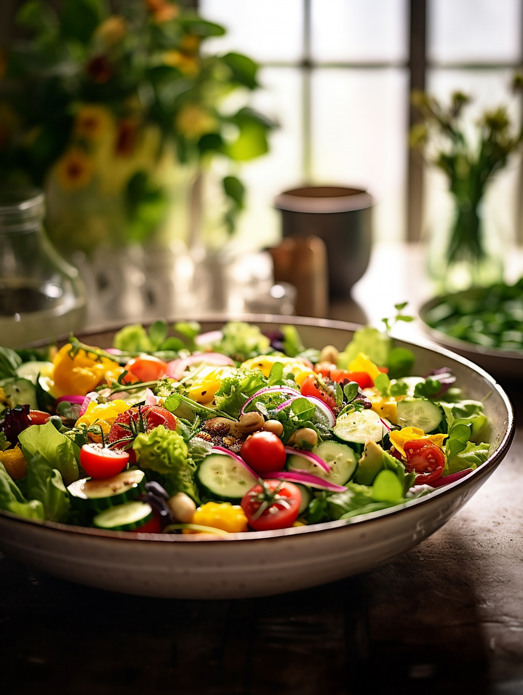

Selkeä sivu fitnessiin, ruokavalioon ja fiksuun liikkumiseen
Tämä yhden sivun opas näyttää, miten syöt järkevämmin, liikut fiksummin ja rakennat arkeen
mallin, joka ei perustu höttöön vaan toimiviin perusasioihin. Painotus on DASH-ajattelussa,
selkeässä ruokarakenteessa ja käytännön tekemisessä.
Hyvä perusmalli on kävely, peruskunto, lihaskunto ja riittävä palautuminen. Ei tarvitse tehdä kaikkea kerralla.
📈 Arki
Tulos syntyy toistosta. Yksi hyvä päivä ei ratkaise kaikkea, mutta hyvä rakenne ratkaisee paljon.

Kasvispainotteinen lautasmalli sopii hyvin DASH-ajatteluun.
🥗 1. Mikä DASH oikeastaan on?
DASH on ruokamalli, jossa painotetaan kasviksia, hedelmiä, vähärasvaisia maitotuotteita,
täysjyviä, papuja, pähkinöitä ja järkevää proteiinia. Iso idea on vähentää liiallista suolaa,
kovaa rasvaa ja jatkuvaa roskaruokapainetta.
nuku tarpeeksi, koska palautuminen on osa kehitystä
Liikunta toimii parhaiten, kun se on säännöllistä eikä täydellisyyttä tavoittelevaa.
🧂 7. Suola ratkaisee paljon
DASH-ajattelussa suola on iso vipu. Kun suolaa tulee vähemmän, verenpaineen hallinta helpottuu
monella ihmisellä. Tärkein pointti on vähentää jatkuvaa piilosuolaa.
älä suolaa ruokaa automaattisesti
vältä valmis kastike + valmis keitto + leikkele + juusto -yhdistelmiä päivittäin
katso pakkausta ja valitse useammin vähäsuolaisempi vaihtoehto
mausta sitruunalla, pippurilla, valkosipulilla, paprikalla ja yrteillä
🔄 8. Joustava vaihtolista
Aamupala
puuro ↔ täysjyväleipä + jogurtti
marjat ↔ omena ↔ banaani
Lounas / päivällinen
kana ↔ kala ↔ tofu ↔ pavut
riisi ↔ peruna ↔ pasta ↔ ohra
salaatti ↔ pakastekasvikset ↔ wok-vihannekset
⚠️ 9. Yleisimmät virheet
kasviksia tulee liian vähän
proteiinia liian vähän ja nälkä kasvaa illalla
hiilarit tulevat pullasta, kekseistä ja limusta
päivällä syödään liian vähän ja illalla homma leviää
ostetaan “fitness tuotteita”, mutta perusruoka puuttuu
Kauppalista toimii parhaiten, kun vihannesostot tehdään yhdellä selkeällä kierroksella.
Näillä saat rakennettua toimivan rungon ilman turhaa kikkailua.
💡 11. Yksi lause, joka pitää muistaa
Jos lautasella on paljon kasviksia, sopivasti proteiinia, järkevä hiilari ja vähän pehmeää rasvaa,
olet yleensä oikealla polulla.
12. Nopea toimintamalli viikolle
Tee yksi kauppareissu, valmistele 2–3 perusateriaa valmiiksi ja päätä etukäteen,
milloin liikut. Kun päätös tehdään ennen nälkää ja väsymystä, toteutus on paljon helpompi.
13. Tulevat työt ja seuraavat aiheet
Tämä sivu on osa kasvavaa omaa verkkojulkaisua fitnessin, ruokavalion, liikunnan ja tulevien projektien ympärille.
lisää ruokavalio-oppaita
treeniin liittyviä alasivuja
selkeitä kauppalistoja ja esimerkkipäiviä
käytännön hyvinvointi- ja arkioppaita
uusia monikielisiä sisältöjä
📚 13. Tulevat työt ja seuraavat julkaisut
Tämä sivu on osa kasvavaa henkilökohtaista julkaisukokonaisuutta. Tavoitteena on laajentaa sivustoa useilla uusilla hyvinvointiin, liikuntaan ja ravintoon liittyvillä töillä.
selkeitä ruokavalio-oppaita eri tavoitteisiin
liikuntaan ja arkeen liittyviä alasivuja
käytännön hyvinvointisisältöä useilla kielillä
uusia julkaistavia portfolio- ja oppimissivuja
laajempi henkilöbrändi ja oma julkaisukokonaisuus
Fitness ei ole taikatemppu. Se on rakenne.
Tämä sivu on tehty niin, että voit julkaista sen sellaisenaan GitHub Pagesissa.
Voit myöhemmin lisätä omat kuvat, taustat, logon, lisäsivut tai vaikka kokonaisen ravinto- ja treeniblogin.
MSJ / MultiStoreOnline
Tekeillä ja tulossa pian. Tuleva osoite: MULTISALEJOURNEY